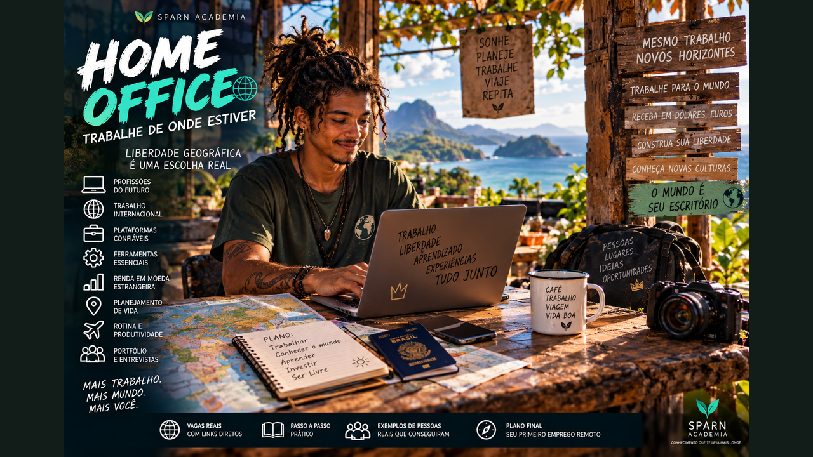

Trabalhe de Onde Estiver — descubra profissões remotas, oportunidades internacionais, plataformas de vagas e construa seu Acesso Beta para entrar no mercado global.
6 módulos24 aulasPlano de carreira de 90 dias
0 de 24 aulas concluídas
Seu endereço não precisa definir o tamanho da sua carreira
Uma geração inteira está entrando no mercado em um momento diferente: parte do trabalho pode atravessar cidades e fronteiras pela internet. Este curso mostra as possibilidades sem vender atalhos — você vai descobrir profissões, preparar seu perfil, encontrar oportunidades reais e construir uma estratégia para trabalhar remotamente no Brasil ou internacionalmente.

01
Seu escritório agora pode estar no mundo
Abra a visão sobre trabalho remoto, carreira internacional e as diferentes formas de trabalhar sem estar fisicamente na sede da empresa.
Aula 01
A maior mudança não é trabalhar de casa
Home office é apenas uma das formas de trabalho remoto. O salto mais importante é perceber que, em muitas profissões digitais, o trabalho pode ser entregue pela internet. Isso permite que uma equipe tenha pessoas em cidades e até países diferentes.
Mas “remoto” não significa automaticamente “de qualquer lugar”. Algumas vagas aceitam candidatos do mundo inteiro; outras restringem país, região ou fuso horário por questões jurídicas, tributárias, de folha, clientes ou operação. A habilidade central é aprender a identificar a diferença entre remote, remote-first e work from anywhere.
Para um jovem, isso muda o mapa mental da carreira: sua busca pode deixar de terminar no bairro ou na cidade. Dependendo da profissão, idioma e elegibilidade da vaga, empresas internacionais podem entrar no radar.
Atividade prática
Pesquise 10 vagas remotas e classifique: Brasil, América Latina, fuso específico ou worldwide.
Aula 02
Quatro maneiras de ganhar remotamente
Há pelo menos quatro caminhos importantes: ser empregado remoto de uma empresa; atuar como prestador ou contractor; trabalhar como freelancer por projeto; ou construir um serviço próprio vendido online. Cada modelo possui estabilidade, autonomia, responsabilidades e regras diferentes.
Uma empresa estrangeira pode contratar diretamente onde possui estrutura, usar soluções de contratação internacional ou trabalhar com profissionais independentes, conforme o caso. Para o trabalhador, é essencial entender o tipo de relação oferecida antes de comparar valores.
Não confunda salário anunciado com dinheiro líquido. Impostos, câmbio, taxas, benefícios e responsabilidades contratuais precisam entrar na conta.
Atividade prática
Crie uma tabela comparando emprego, contractor, freelancer e serviço próprio.
Aula 03
O mercado internacional ficou mais acessível
Equipes distribuídas já são uma realidade. Plataformas de contratação internacional permitem que empresas organizem pessoas em vários países, e existem empresas totalmente remotas. Isso não elimina fronteiras legais, mas reduz a necessidade de todos viverem perto do escritório.
Dados recentes da Deel mostram contratação transfronteiriça em áreas como desenvolvimento, vendas, atendimento, marketing e produto, além do crescimento de funções ligadas a IA. Isso mostra que carreira internacional remota não se resume a programação.
O objetivo deste curso não é vender a promessa de dinheiro fácil. É mostrar que existe um mercado real e ensinar como construir competência para participar dele.
Atividade prática
Escolha três profissões internacionais remotas que combinam com suas habilidades atuais.
Aula 04
Seu novo mapa de possibilidades
Imagine três círculos. O primeiro contém trabalhos remotos brasileiros. O segundo contém trabalhos para empresas estrangeiras que contratam no Brasil ou na América Latina. O terceiro contém projetos freelance internacionais. Você não precisa começar pelo círculo mais difícil.
Um caminho inteligente é construir experiência local, portfólio e comunicação enquanto começa a observar vagas globais. Assim, inglês e competências digitais deixam de ser matérias abstratas e passam a ter uma função concreta na sua liberdade profissional.
Atividade prática
Desenhe seus três círculos e coloque pelo menos cinco oportunidades em cada um.
Ferramenta do módulo — atualize seu Passaporte Profissional com descobertas, vagas, competências e próximos passos.
02
Profissões que atravessam fronteiras
Descubra funções remotas para perfis técnicos, criativos, administrativos e comerciais.
Aula 05
Tecnologia, dados e IA
Desenvolvimento de software, QA, análise de dados, produto, suporte técnico e segurança aparecem com frequência no universo remoto. A expansão da IA também criou trabalho em avaliação, treinamento, operações e especialidades que combinam conhecimento de domínio com ferramentas digitais.
Não é obrigatório virar programador para trabalhar com tecnologia. Empresas digitais também precisam de pessoas em atendimento, operações, vendas, conteúdo e gestão.
Comece escolhendo uma trilha e estudando vagas reais. Os requisitos das empresas funcionam como um mapa curricular gratuito.
Atividade prática
Abra 10 vagas de uma função e conte quais cinco competências mais se repetem.
Aula 06
Criação, comunicação e marketing
Design, edição de vídeo, redação, social media, marketing de conteúdo, performance, SEO, branding e produção audiovisual podem ser realizados remotamente. Para esses caminhos, portfólio costuma ter enorme importância.
O profissional internacional precisa aprender a apresentar contexto, processo e resultado. Um portfólio forte não é uma galeria de peças bonitas: mostra problema, decisão e impacto.
Criadores brasileiros ainda carregam uma vantagem cultural importante: repertório próprio. Internacionalizar não significa apagar sua identidade.
Atividade prática
Escolha três trabalhos seus e escreva o problema, sua contribuição e o resultado de cada um.
Aula 07
Atendimento, vendas e operações
Customer support, customer success, SDR, vendas, recrutamento, operações e assistência virtual ampliam o leque para quem possui comunicação e organização fortes. Algumas vagas valorizam português e espanhol justamente porque atendem mercados latino-americanos.
Fuso horário e idioma podem ser decisivos. Uma vaga remota pode exigir sobreposição de algumas horas com a equipe ou clientes. Leia a descrição inteira antes de aplicar.
Essas áreas também podem servir como porta de entrada para empresas digitais e depois permitir movimentos internos.
Atividade prática
Liste suas experiências de atendimento, organização ou vendas, mesmo que tenham acontecido fora de um escritório.
Aula 08
Idiomas multiplicam mercado
Inglês amplia fortemente o universo de vagas internacionais, mas não espere perfeição para começar a estudar o mercado. Leia descrições de vagas, aprenda vocabulário profissional e pratique apresentações curtas.
Espanhol também pode abrir portas na América Latina. Português pode ser diferencial para empresas que atendem o Brasil.
O objetivo é comunicação funcional: compreender tarefas, fazer perguntas, registrar decisões e colaborar. Fluência profissional cresce com uso constante.
Atividade prática
Grave uma apresentação de 60 segundos em português e tente criar versões em inglês ou espanhol.
Ferramenta do módulo — atualize seu Passaporte Profissional com descobertas, vagas, competências e próximos passos.
03
Onde encontrar trabalho remoto
Aprenda a pesquisar vagas reais, interpretar restrições geográficas e criar uma rotina de candidatura.
Aula 09
LinkedIn e busca inteligente
No LinkedIn, combine cargo com o filtro remoto e examine cuidadosamente a localização permitida. Pesquise também termos como worldwide, LATAM, Brazil remote e contractor. Siga empresas distribuídas e recrutadores da sua área.
Não envie a mesma candidatura para tudo. Salve vagas compatíveis e procure padrões. Quanto mais específico for seu alvo, mais fácil adaptar currículo e portfólio.
Use alertas para transformar a busca em rotina, não em maratona ocasional.
Atividade prática
Crie três buscas salvas: sua função + remote; sua função + LATAM; sua função + worldwide.
Aula 10
Plataformas especializadas
We Work Remotely e Remote OK são exemplos conhecidos de painéis focados em vagas remotas. FlexJobs reúne vagas flexíveis e internacionais, embora parte de seus recursos seja paga. Wellfound é conhecido pelo ecossistema de startups. Upwork é voltado a trabalho freelance e projetos.
Nenhuma plataforma garante contratação. Verifique em cada anúncio quem pode se candidatar, modalidade, país, fuso e forma de contratação.
No fim deste curso há uma Central de Oportunidades com links diretos para você começar.
Atividade prática
Abra quatro plataformas e salve duas oportunidades plausíveis em cada uma.
Aula 11
Empresas remote-first
Outra estratégia é procurar diretamente empresas que nasceram distribuídas. Em vez de esperar uma vaga aparecer em um agregador, monte uma lista de empresas e acompanhe suas páginas de carreira.
A Deel, por exemplo, se apresenta como uma equipe totalmente remota e mantém vagas em diversas áreas e países. Outras empresas possuem políticas diferentes, por isso a página oficial de carreiras é sempre a melhor confirmação.
Crie uma lista de empresas-alvo e revise uma vez por semana.
Atividade prática
Monte sua primeira lista de 15 empresas remotas ou distribuídas.
Aula 12
Freelance internacional
Freelancing pode permitir que um jovem construa experiência com projetos menores antes de disputar empregos globais. Upwork e outras plataformas conectam clientes e profissionais, mas competição, taxas e reputação fazem parte do jogo.
Comece com uma oferta específica. “Faço qualquer coisa online” é fraco; “edito vídeos curtos para restaurantes” ou “faço suporte em português para lojas digitais” comunica valor.
Nunca pague para receber um emprego e desconfie de propostas que pedem dinheiro, dados sensíveis ou movimentações financeiras estranhas.
Atividade prática
Escreva uma oferta de serviço em uma frase: eu ajudo [público] a [resultado] por meio de [serviço].
Ferramenta do módulo — atualize seu Passaporte Profissional com descobertas, vagas, competências e próximos passos.
04
Prepare-se para ser contratado
Construa currículo, portfólio e presença digital que funcionem sem você estar na sala.
Aula 13
Currículo para leitura rápida
Um currículo remoto precisa tornar fácil entender função, experiência, resultados, ferramentas e idiomas. Evite autobiografia longa. Use resultados concretos quando existirem e adapte palavras-chave à vaga sem inventar experiência.
Para vagas internacionais, prepare uma versão em inglês quando necessário. País, fuso horário e disponibilidade podem ser relevantes, mas não inclua informações pessoais desnecessárias.
O currículo abre a porta; o portfólio e a entrevista sustentam a conversa.
Atividade prática
Reescreva três experiências usando: ação + contexto + resultado.
Aula 14
Portfólio mesmo sem emprego anterior
Você pode criar projetos demonstrativos. Um aspirante a social media pode redesenhar uma semana de conteúdo para um negócio fictício; um analista pode construir um dashboard com dados públicos; um desenvolvedor pode publicar um pequeno aplicativo.
Deixe claro quando é projeto pessoal. O objetivo não é fingir cliente, e sim provar capacidade.
Documente raciocínio, ferramentas e decisões. Isso transforma estudo em evidência.
Atividade prática
Crie um projeto de portfólio que possa ser concluído em sete dias.
Aula 15
Perfil profissional que trabalha por você
Seu LinkedIn, GitHub, Behance, site ou outra vitrine deve dizer rapidamente o que você faz. Título, resumo e projetos precisam conversar com a função desejada.
Publicar aprendizados também pode criar prova de consistência. Não é necessário virar influenciador; basta tornar seu desenvolvimento profissional visível.
Revise também o básico: foto adequada ao contexto, contatos atualizados e links funcionando.
Atividade prática
Peça para alguém olhar seu perfil por 10 segundos e dizer o que acha que você faz.
Aula 16
Entrevista remota
Teste câmera, áudio, conexão e ambiente antes. Tenha exemplos de situações em que organizou tarefas, resolveu problemas e colaborou. Em equipes distribuídas, comunicação escrita e autonomia são valorizadas.
Se a entrevista for em outro idioma, prepare vocabulário da função e respostas-chave, mas evite decorar discursos artificiais.
Pergunte sobre horário, localização permitida, vínculo, remuneração, benefícios e rotina da equipe.
Atividade prática
Simule uma entrevista de 15 minutos e responda: conte sobre você, projeto difícil e por que esta vaga.
Ferramenta do módulo — atualize seu Passaporte Profissional com descobertas, vagas, competências e próximos passos.
05
Trabalhar bem sem escritório
Aprenda as competências que transformam liberdade geográfica em trabalho sustentável.
Aula 17
Comunicação assíncrona
Equipes internacionais nem sempre estão online ao mesmo tempo. Por isso, mensagens claras, documentação e atualizações de status são essenciais. Uma boa mensagem explica contexto, decisão, próximo passo e prazo.
Antes de marcar uma reunião, pergunte se a informação poderia ser registrada. Isso cria histórico e respeita fusos.
Escrever bem vira uma competência profissional poderosa.
Atividade prática
Transforme uma mensagem vaga de trabalho em uma atualização com contexto, ação, prazo e bloqueio.
Aula 18
Rotina e autonomia
Liberdade sem organização pode virar ansiedade. Defina horário de início, blocos de foco, pausas e encerramento. A rotina pode ser flexível, mas precisa proteger entrega e saúde.
Trabalhar de casa também exige negociar espaço com quem mora junto. Quando possível, crie sinais de horário e um local minimamente consistente.
Produtividade não é ficar online o dia inteiro; é entregar com qualidade e previsibilidade.
Atividade prática
Desenhe uma rotina de trabalho de 8 horas incluindo foco, comunicação, almoço e pausas.
Aula 19
Ferramentas digitais
Videoconferência, chat, documentos colaborativos, gestão de projetos, armazenamento em nuvem e calendários formam a infraestrutura do trabalho remoto. As ferramentas mudam, mas os princípios permanecem.
Aprenda primeiro a organizar arquivos, escrever documentos, compartilhar permissões, usar calendário e acompanhar tarefas. Depois aprofunde ferramentas específicas da profissão.
IA pode acelerar pesquisa, rascunhos e automações, mas você continua responsável por revisar e proteger dados.
Atividade prática
Crie um espaço de projeto com pasta, documento de briefing, lista de tarefas e calendário.
Aula 20
Fusos, limites e vida
Trabalho internacional pode trazer reuniões cedo ou tarde. Antes de aceitar, entenda a sobreposição exigida. Não construa liberdade geográfica sacrificando sono de forma permanente.
Defina limites e combine expectativas. Viajar enquanto trabalha exige internet, ambiente, tempo e planejamento — não é férias com laptop.
A verdadeira liberdade remota é poder desenhar uma vida sustentável.
Atividade prática
Compare seu fuso com três cidades e identifique uma janela saudável de colaboração.
Ferramenta do módulo — atualize seu Passaporte Profissional com descobertas, vagas, competências e próximos passos.
06
Seu Acesso Beta de carreira global
Transforme descoberta em um projeto de 90 dias para conseguir sua primeira oportunidade remota.
Aula 21
Escolha uma função-alvo
Não tente aprender todas as profissões remotas ao mesmo tempo. Escolha uma função principal e uma alternativa próxima. Leia pelo menos 30 vagas e construa um mapa de competências.
Separe requisitos em três grupos: já tenho, posso aprender em 90 dias e exige experiência mais longa. Isso reduz ansiedade e cria direção.
Seu Acesso Beta deve nascer do mercado real, não de listas genéricas.
Atividade prática
Escolha sua função e monte o mapa de competências a partir de 30 vagas.
Aula 22
Plano de 90 dias
No primeiro mês, fortaleça fundamentos e crie um projeto. No segundo, produza portfólio e presença profissional. No terceiro, mantenha candidaturas consistentes, networking e entrevistas simuladas.
Adapte o ritmo à sua realidade. O importante é ter entregas semanais mensuráveis.
Aprender e aplicar precisam acontecer juntos.
Atividade prática
Defina 12 entregas semanais, uma para cada semana do plano.
Aula 23
Sistema de candidaturas
Crie uma planilha com empresa, vaga, país permitido, data, currículo usado, contato e status. Isso impede candidaturas duplicadas e mostra quais estratégias geram entrevistas.
Qualidade e consistência importam mais do que disparar centenas de currículos sem aderência. Revise seus resultados a cada duas semanas.
Se nenhuma candidatura avança, ajuste alvo, currículo, portfólio ou senioridade.
Atividade prática
Monte sua planilha e registre as primeiras cinco vagas.
Aula 24
Projeto final: meu passaporte profissional
Reúna função-alvo, currículo, perfil, portfólio, plataformas, empresas-alvo e rotina de candidatura em um único plano. Inclua também sua estratégia de idioma e uma meta de entrevistas.
O objetivo não é garantir emprego em 90 dias — ninguém pode prometer isso. O objetivo é terminar o curso com uma máquina de busca profissional funcionando.
Seu endereço deixa de ser o limite da sua imaginação profissional. A partir daqui, você aprende a procurar oportunidades onde seu trabalho pode chegar.
Atividade prática
Escreva seu compromisso de 90 dias e escolha a primeira ação que fará amanhã.
Ferramenta do módulo — atualize seu Passaporte Profissional com descobertas, vagas, competências e próximos passos.
🌍 Central de Oportunidades — comece a procurar de verdade
Estes links levam a plataformas e páginas de carreira. Remoto não significa automaticamente mundial: sempre confira país permitido, fuso, idioma e modalidade de contratação.